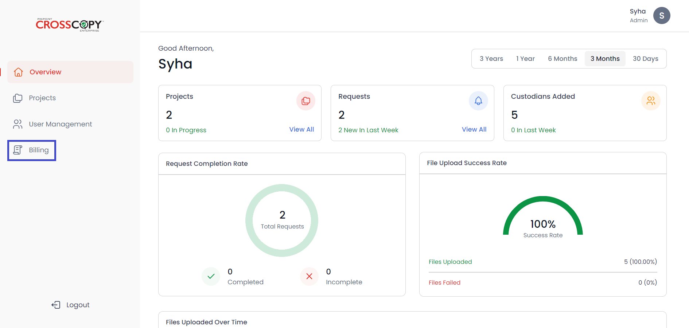
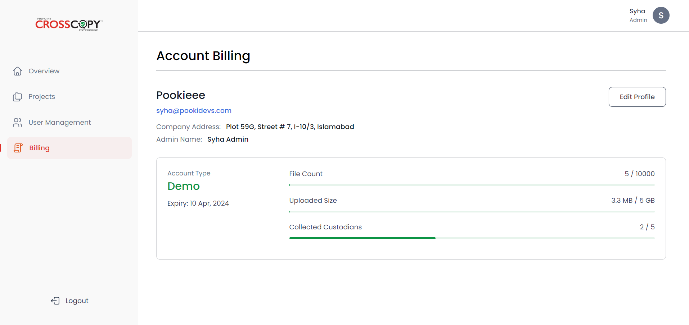

To view your account’s usage, you will need to go to the Account Billing page. To access the Account Billing page, click on the Billing option from the navigation bar on the left-hand side.
You will see a similar screen.
On this page you will be able to see the following information:
In addition to viewing the information above, you can also edit your profile from this page. To do so, click on the Edit Profile button.